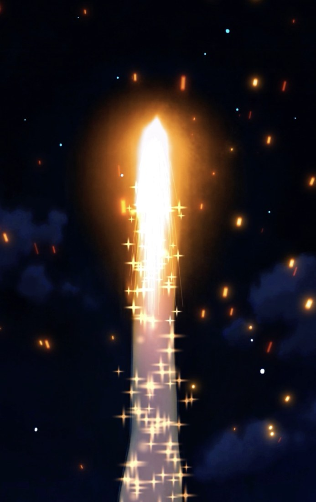
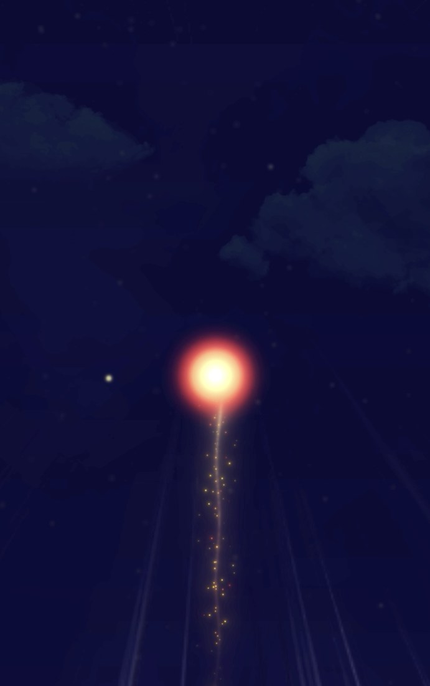
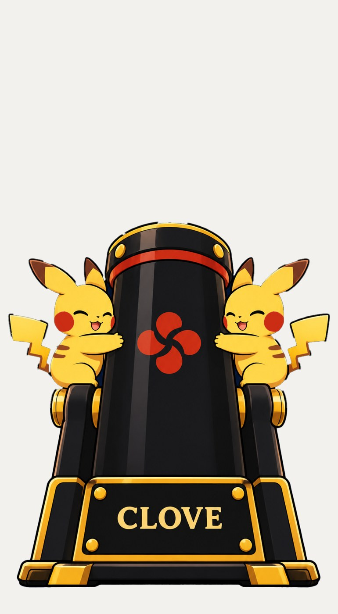
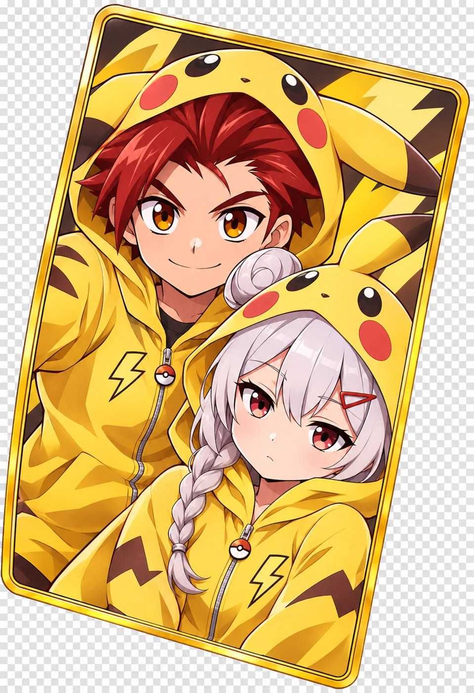
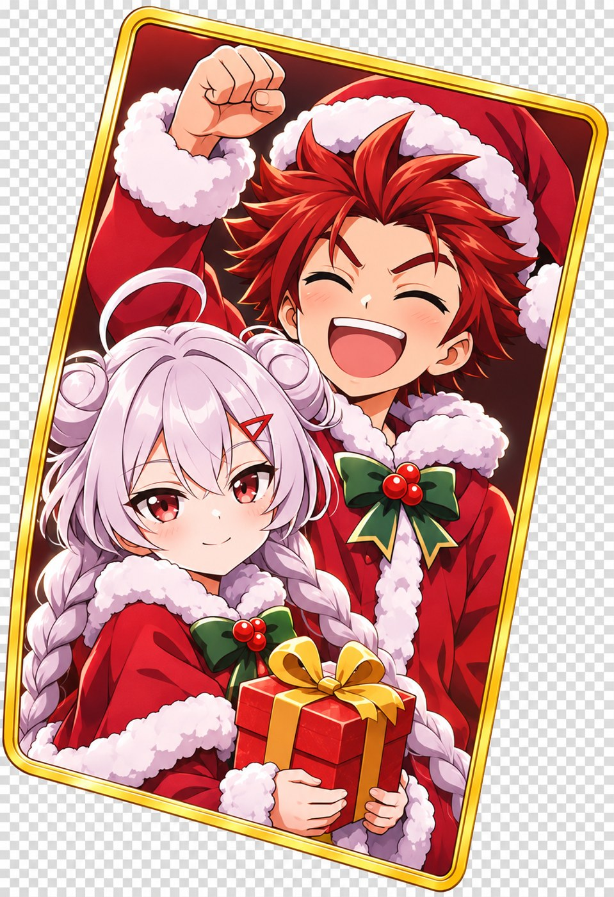

Your brief.
A world of possibility.
Directed timing. Recognisable characters. A considered reveal.
Explore the brief-led sequences, then see where else the idea can go.
Drag any image to move it.


A light rises from the cannon. After a brief pause, the fireworks open. The card appears and the two characters stand together.
Specific direction.
Visible results.
Each sequence has its own requirements.
Select a version and review the pacing, effects, character action and reveal against its brief.
This preview is unavailable. Please check the media folder.
Artwork behind the treatment.
Select an image to inspect it.
Preview renders for discussion. Requirements describe the intended sequence, not a completed acceptance check. These versions have different event counts and are not frame-matched colour swaps.
And then,
a little what if?
Two self-initiated explorations, made to show how the visual world can expand. New costumes, props, palettes and atmosphere—beyond the requested versions.


An electric remix.
10 SEC ↗A mascot-inspired cannon, gold-and-red fireworks and a matching costume reveal. A playful change of visual identity.
DIALOGUE DIRECTIONThe little animal at the start: 「ピカ！」 After the fireworks: 「ゲットだぜ！」
CREATOR-INITIATED CONCEPT
A festive new world.
10 SEC ↗Seasonal props, festive fireworks and a Christmas costume card. The sequence becomes a different occasion.
DIALOGUE DIRECTIONThe girl and boy together, as the card appears: 「メリークリスマス！」
CREATOR-INITIATED CONCEPTIndependent creative studies showing the possibilities of a themed treatment. These are not official collaborations. Any commissioned use of third-party characters or brands would require the appropriate permissions.
Directed timing.
Flexible visual treatments.
I combine edited motion references with selected artwork to develop different visual versions of a sequence. A monochrome video provides the timing and movement guide. Reference images define the characters, props, fireworks, colours and card artwork. Written scene directions connect these elements into the new video.
The examples show how a sequence can take on different visual treatments while keeping a clear progression: preparation, launch, anticipation, explosion and reveal. Where the brief calls for different shot counts or character actions, those events are specified for that version.
One timing base. A new visual world.
The timing base is muted during side-by-side playback.
Shown with the Christmas exploration, which follows this timing base. The motion reference guides generation; matching exact frames, precise event counts or detailed artwork still requires checking the result. Versions with different event counts should be assessed against their own sequence requirements.
Define the required sequence.
I begin with the brief: the number of launches, the type and scale of each firework, the character actions, the card reveal and the dialogue. These requirements establish what the scene needs to communicate.
Develop and select the visual references.
I use different image-generation tools according to the visual task, then select references that work together. Each image has a specific role: character identity, cannon design, launch effects, suspense, fireworks or the final card.
Establish timing with a monochrome edit.
The edited monochrome video acts as a timing and event-cue reference. It guides the movement, pacing, anticipation, transitions and final hold, giving the visual treatment a defined sequence to follow.
Apply the visual treatment.
I combine the motion reference, selected images and scene directions to generate the new version. The directions identify which reference governs each element and when each event should happen.
Direct sound and review the result.
Dialogue is specified by speaker, exact wording, delivery and cue. Review checks the event order, firework count, character appearance, card design and audio timing, with further generation or editing where needed.
Fine detail.
Familiar character.
From a finger gesture to a full-body pose, selected references help direct the character’s expression, silhouette and camera angle. The examples below show the reference beside the illustrated result.
A gesture with intention.
Hand shape, finger placement and camera perspective provide a specific visual direction for the illustrated character.
The same character. A new pose.
The double-peace gesture becomes a character illustration, with recognisable hair, costume and colour cues. Review the pose and character details together.
Select an image to inspect it. These are reference-guided examples, not a guarantee of identical geometry or perfect consistency in every generation.
Experience behind the result.
I primarily use Dreamina by CapCut, alongside selected creative tools. Dreamina offers ways to guide detailed poses and character consistency; each result is reviewed and refined for the intended brief.
These demonstrations draw on years of experimentation and documentation: prompts, visual references and production techniques refined over time.
This presentation demonstrates production capabilities. My prompt library and reusable AI skill files are private, proprietary materials for now and are not part of the proposed video deliverables. Future access or transfer can be discussed as the collaboration develops, under separately agreed terms.
What should we
push further?
- Does the pacing create the intended anticipation and payoff?
- Are the firework count, size, colour and behaviour clear?
- Are the characters and card reveal consistent with the intended design?
- Are the spoken lines, expressions and gestures right for the scene?
Timing and anticipation. Character fidelity.
Effects and colour. The moment of reveal.